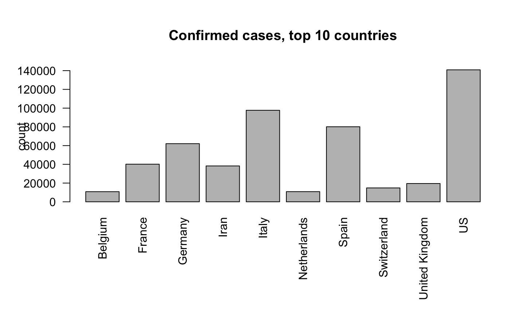
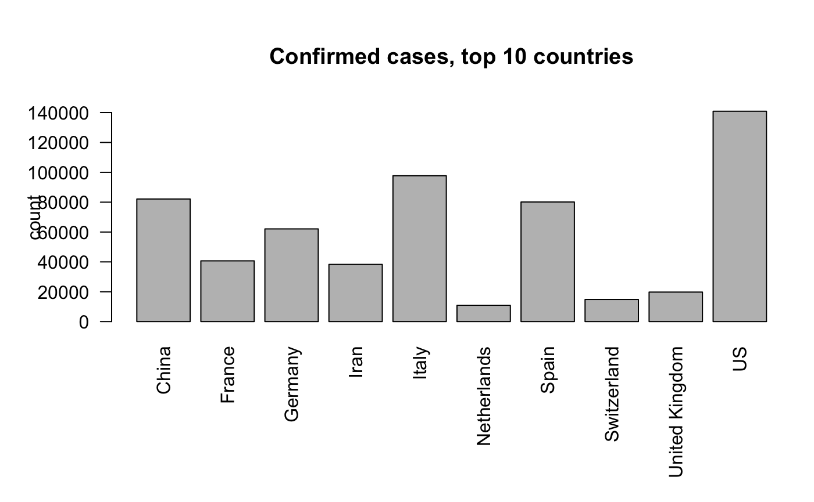
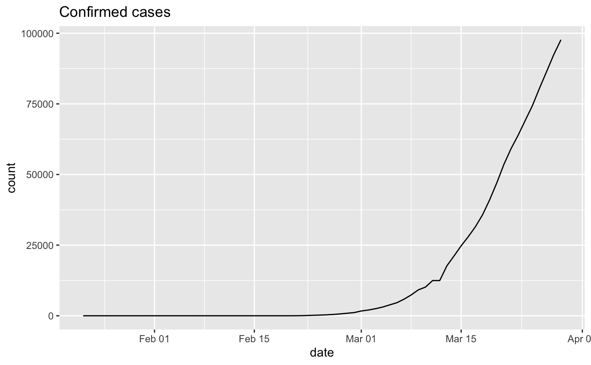
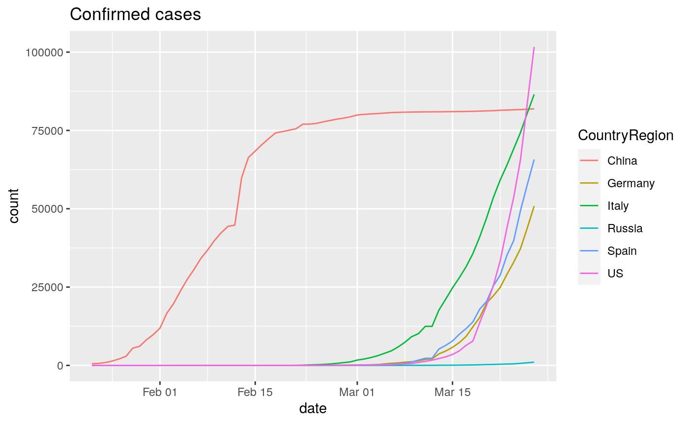
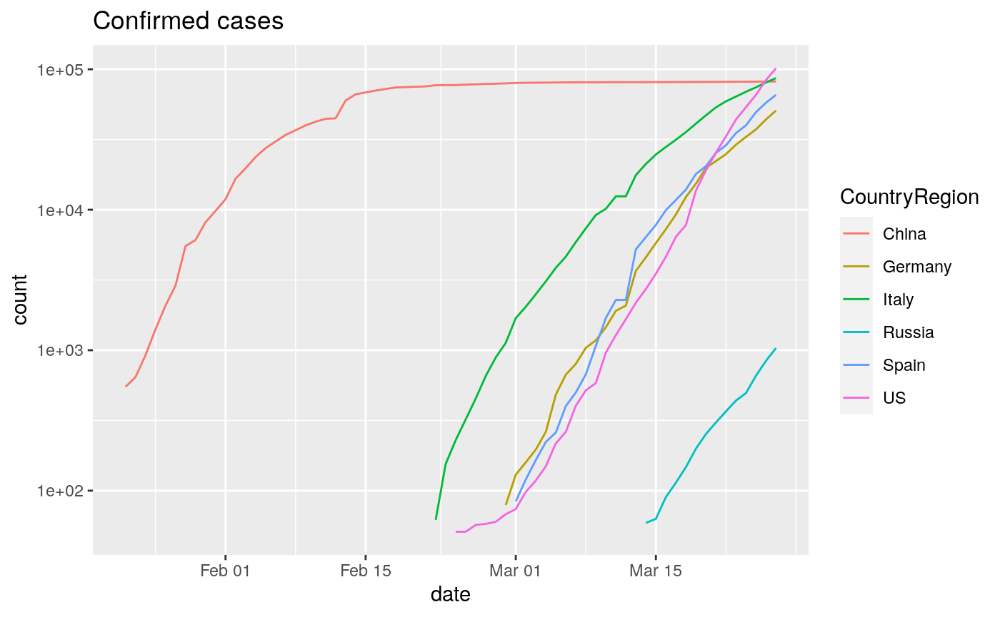

Exploring the COVID-19 pandemic using sars2pack
Sean Davis seandavi@gmail.com and Vincent J. Carey, stvjc at channing.harvard.edu
March 28, 2020
Source:vignettes/sars2pack.Rmd
sars2pack.RmdMotivation
The COVID-19 pandemic is ongoing. The situation on the ground is changing daily as captured by data reported around the world. The sars2pack package aims to:
- Provide timely, computable, easily accessible data for research, policy-making, and educational purposes.
- Promote easy computational experimentation with COVID-19 data
- Serve as a source of documentation and education for available COVID-19 analysis and visualization approaches.
- House recipes for regularly updated data products such as spreadsheets and maps for use by non-R-savvy data consumers.
- Collect interesting data stories along with code as data science training resources for the many biomedical researchers who cannot currently perform experiments
Quick start
Installation
BiocManager::install('seandavi/sars2pack')
COVID-19 resources in this package
The COVID-19 data in this package are, right now, focused toward time-series descriptions of confirmed cases, deaths, testing, and recovered cases. There is no requirement that this remain the case. Contributions of additional data resources or simple accessor functions will only add to our abilities to use data science and modeling to understand COVID-19.
Request for help: I would be more than happy to accept help with defining new data resources. Consider a pull request (or an issue for non-programmer types).
Epidemic time-series data
-
JHU : global deaths, confirmed cases, and recovered time series data; does not include fine-level United States data. See
jhu_data(). -
New York Times : United states state and county level deaths, confirmed cases time series. See
nytimes_county_data()andnytimes_state_data. - USAFacts : Alternative United states state and county level deaths and confirmed cases time series
Epidemic time series data
Usage of each of the time series datasets follows a similar pattern.
- Fetch a tidy
tbl_dfusing a function such asjhu_data() - In the resulting
tbl_df, the columnsdate(of typedate) andcountof typenumericcolumns are standard. - Additional columns describe locations, subsets of data (such as
confirmed,deaths,recovered) and vary from dataset to dataset.
Regardless of the original format of the data, the sars2pack datasets are presented as tidy data to facilitate dplyr, ggplot, and other fluid analysis approaches to apply directly.
Access data
This section briefly introduces how to access the data resources in this package. Note that many of the functions below require a network connection to get updated data.
JHU Dataset
## [1] "s2p_long_df" "tbl_df" "tbl" "data.frame"dim(jhu)
## [1] 32868 7Column names include:
colnames(jhu)
## [1] "ProvinceState" "CountryRegion" "Lat" "Long"
## [5] "date" "count" "subset"And a very small subset of the data.
head(jhu,3)
## # A tibble: 3 x 7
## ProvinceState CountryRegion Lat Long date count subset
## <chr> <chr> <dbl> <dbl> <date> <dbl> <chr>
## 1 <NA> Afghanistan 33 65 2020-01-22 0 confirmed
## 2 <NA> Afghanistan 33 65 2020-01-23 0 confirmed
## 3 <NA> Afghanistan 33 65 2020-01-24 0 confirmedUSAFacts Dataset
usa_facts = usa_facts_data()
## Parsed with column specification:
## cols(
## .default = col_double(),
## `County Name` = col_character(),
## State = col_character()
## )## See spec(...) for full column specifications.## Warning: Missing column names filled in: 'X71' [71]## Parsed with column specification:
## cols(
## .default = col_double(),
## `County Name` = col_character(),
## State = col_character(),
## X71 = col_logical()
## )
## See spec(...) for full column specifications.## Warning: 1 parsing failure.
## row col expected actual file
## 1791 X71 1/0/T/F/TRUE/FALSE ` 'https://static.usafacts.org/public/data/covid-19/covid_deaths_usafacts.csv'## Warning: 6394 failed to parse.class(usa_facts)
## [1] "tbl_df" "tbl" "data.frame"dim(usa_facts)
## [1] 428398 7Column names include:
colnames(usa_facts)
## [1] "county_fips" "state" "State" "state_fips" "subset"
## [6] "date" "count"And a very small subset of the data.
head(usa_facts,3)
## # A tibble: 3 x 7
## county_fips state State state_fips subset date count
## <dbl> <chr> <chr> <dbl> <chr> <date> <dbl>
## 1 0 Statewide Unallocated AL 1 confirmed 2020-01-22 0
## 2 0 Statewide Unallocated AL 1 confirmed 2020-01-23 0
## 3 0 Statewide Unallocated AL 1 confirmed 2020-01-24 0NYTimes datasets
nytimes_state = nytimes_state_data()
## Parsed with column specification:
## cols(
## date = col_date(format = ""),
## state = col_character(),
## fips = col_character(),
## cases = col_double(),
## deaths = col_double()
## )class(nytimes_state)
## [1] "tbl_df" "tbl" "data.frame"dim(nytimes_state)
## [1] 2772 5Column names include:
colnames(nytimes_state)
## [1] "date" "state" "fips" "count" "subset"And a very small subset of the data.
head(nytimes_state,3)
## # A tibble: 3 x 5
## date state fips count subset
## <date> <chr> <dbl> <dbl> <chr>
## 1 2020-01-21 Washington 53 1 confirmed
## 2 2020-01-22 Washington 53 1 confirmed
## 3 2020-01-23 Washington 53 1 confirmednytimes_county = nytimes_county_data()
## Parsed with column specification:
## cols(
## date = col_date(format = ""),
## county = col_character(),
## state = col_character(),
## fips = col_character(),
## cases = col_double(),
## deaths = col_double()
## )class(nytimes_county)
## [1] "tbl_df" "tbl" "data.frame"dim(nytimes_county)
## [1] 31672 6colnames(nytimes_county)
## [1] "date" "county" "state" "fips" "count" "subset"Use cases
Basic data exploration
In this section, we will be using a combination of [dplyr] and [ggplot2] to explore the COVID-19 global data from JHU. For details on this dataset, see the help using ?jhu_data.
The next line of code will do a (set of) network calls to fetch the most up-to-date dataset from the JHU github repository.
## # A tibble: 3 x 7
## ProvinceState CountryRegion Lat Long date count subset
## <chr> <chr> <dbl> <dbl> <date> <dbl> <chr>
## 1 <NA> Afghanistan 33 65 2020-01-22 0 confirmed
## 2 <NA> Afghanistan 33 65 2020-01-23 0 confirmed
## 3 <NA> Afghanistan 33 65 2020-01-24 0 confirmedWe now want to ask a series of questions about the dataset.
- How many records are in the dataset?
nrow(jhu)
## [1] 32868- How many different countries are represented?
## [1] 176Most records have no listing for ProvinceState column. Let’s look at a few of those to get an idea of what is there when not empty:
- What is in the
ProvinceStatecolumn?
To answer this question, we will be using dplyr, so some familiarity with that package will be helpful to follow this code.
jhu %>% dplyr::filter(!is.na(ProvinceState)) %>% dplyr::select(ProvinceState, CountryRegion) %>% unique() %>% head(10)
## # A tibble: 10 x 2
## ProvinceState CountryRegion
## <chr> <chr>
## 1 Australian Capital Territory Australia
## 2 New South Wales Australia
## 3 Northern Territory Australia
## 4 Queensland Australia
## 5 South Australia Australia
## 6 Tasmania Australia
## 7 Victoria Australia
## 8 Western Australia Australia
## 9 Alberta Canada
## 10 British Columbia CanadaWe still have not looked at the most valuable information, the date and count columns in any detail.
- What is the current count of confirmed cases by country, ordered by highest count down?
There is a lot to unpack in the next code block, but the results are quite useful. We will use the DT package to make the dataset searchable and sortable.
library(DT) latest_jhu_data = jhu %>% dplyr::filter(subset=='confirmed' & is.na(ProvinceState)) %>% dplyr::group_by(CountryRegion) %>% dplyr::slice(which.max(date)) %>% dplyr::arrange(desc(count)) DT::datatable(latest_jhu_data, rownames=FALSE)
Note: I included a little is.na in the filtering above to remove records where country data are split out over subparts. We revisit this below.
The data here could be usefully displayed as a graph as well.
par(las=2, mar=c(8,5,5,1)) barplot(count ~ CountryRegion, xlab = '', data=head(latest_jhu_data,10), main='Confirmed cases, top 10 countries')

We note here that China is not shown. That is because we limited the data to only rows that had empty ProvinceState records. To add those records back in, we sum all the China rows (and those of other countries like Australia, etc.) by country and then perform similar work to produce a final plot.
latest_jhu_data = jhu %>% dplyr::filter(subset=='confirmed') %>% dplyr::select(-c(ProvinceState,Lat,Long)) %>% dplyr::group_by(CountryRegion,date) %>% dplyr::summarize(count = sum(count)) %>% dplyr::slice(which.max(date)) %>% dplyr::arrange(desc(count)) par(las=2, mar=c(8,5,5,1)) barplot(count ~ CountryRegion, xlab = '', data=head(latest_jhu_data,10), main='Confirmed cases, top 10 countries')

Visualize time series data
Up to now, we have ignored the time series aspects of the data and have sliced the dataset by country. In this section, we will be using dplyr and ggplot2 to visualize disease infection and deaths over time.
- How have the cases in Italy changed over time?
library(ggplot2) italy_cc_ts = jhu %>% dplyr::filter(CountryRegion == 'Italy' & subset=='confirmed') ggplot(italy_cc_ts,aes(x=date, y=count)) + geom_line() + ggtitle('Confirmed cases')

- How do the confirmed cases in China, US, Italy, Spain, Germany, and Russia compare over time?
We have to play the same game of summing all values by country and date. Here, we filter the countries to be in a list of countries.
countries_of_interest = c('China','US','Italy','Spain','Germany','Russia') library(ggplot2) cc_ts = jhu %>% dplyr::group_by(CountryRegion,date) %>% dplyr::filter(CountryRegion %in% countries_of_interest & subset=='confirmed') %>% dplyr::summarize(count = sum(count)) head(cc_ts)
## # A tibble: 6 x 3
## # Groups: CountryRegion [1]
## CountryRegion date count
## <chr> <date> <dbl>
## 1 China 2020-01-22 548
## 2 China 2020-01-23 643
## 3 China 2020-01-24 920
## 4 China 2020-01-25 1406
## 5 China 2020-01-26 2075
## 6 China 2020-01-27 2877To make the plot, we use the ggplot2 grouping and coloring to provide curves for each country on the same axis.
ggplot(cc_ts,aes(x=date, y=count, group=CountryRegion)) + geom_line(aes(color=CountryRegion)) + ggtitle('Confirmed cases')

Changing to log scale can give a sense of the “exponentialness” of these data. Also, to remove zeros from the data (which cause problems when taking logs), we can filter data to include only values >=50. Note that ggplot2 will “do the right thing”.
cc_ts %>% dplyr::filter(count>=50) %>% ggplot(aes(x=date, y=count, group=CountryRegion)) + geom_line(aes(color=CountryRegion)) + ggtitle('Confirmed cases') + scale_y_log10()

Consider the following questions based on the figure:
- What does the slope of the lines in this plot represent?
- What is the difference between China and other countries? What does this difference mean in terms of how the disease is spreading?
- What does each
- Pick an arbitrary level on the y-axis and look at the dates associated with each country’s curve with respect to that level. What do differences along the x-axis tell us about where the countries are with respect to disease process?
Modeling illustrated for a simulation
Following code conveyed by John Mallery, we have the following approach for estimating R0 using a single realization of an epidemic simulation.
Note that there can be failures of estimate.R for certain inputs. We are working on that.
library(R0) # Generating an epidemic with given parameters mGT <- generation.time("gamma", c(3,1.5)) set.seed(5432) # always initialize when simulating! mEpid <- sim.epid(epid.nb=1, GT=mGT, epid.length=30, family="poisson", R0=1.67, peak.value=500) mEpid <- mEpid[,1] # Running estimations est <- estimate.R(epid=mEpid, GT=mGT, methods=c("EG","ML","TD"), begin=1, end=30)
## Waiting for profiling to be done...## Warning in est.R0.TD(epid = c(1, 0, 1, 0, 1, 0, 2, 1, 2, 1, 7, 2, 3, 4, :
## Simulations may take several minutes.## Warning in est.R0.TD(epid = c(1, 0, 1, 0, 1, 0, 2, 1, 2, 1, 7, 2, 3, 4, : Using
## initial incidence as initial number of cases.We modified the plotting function in R0 which was calling dev.new too often. Use plot2.

The plotfit2 function is also useful. These fits look identical but they are not.

Modeling for a geographic entity
Now we extract information from the time-series table and obtain estimates of R0 under exponential growth.
Hubei Province
We are able to use exponential growth and time-dependent models with this data, using generation time model from a recent Annals of Internal Medicine paper.
The incidence data probably need smoothing, and the time-dependent model has unreasonable fluctuations.
dates = lubridate::as_date(mdy(names(mar19df)[-c(1:4)])) hubdat = as.numeric(get_series(province="Hubei", country="China", dataset=sars2pack::mar19df)) names(hubdat) = dates mGT <- generation.time("gamma", c(5.8, 0.95)) # from DOI 10.7326/M20-0504 hubdat.filt = trim_leading_values(c(hubdat[1], diff(hubdat))) est.EG <- estimate.R(epid=hubdat.filt, GT=mGT, methods=c("EG", "TD"), begin=1L, end=as.integer(length(hubdat.filt)))
## Waiting for profiling to be done...## Warning in est.R0.TD(epid = c(`2020-01-22` = 444, `2020-01-23` = 0, `2020-01-24`
## = 105, : Simulations may take several minutes.## Warning in est.R0.TD(epid = c(`2020-01-22` = 444, `2020-01-23` = 0, `2020-01-24`
## = 105, : Using initial incidence as initial number of cases.est.EG## Reproduction number estimate using Exponential Growth method.
## R : 0.8061514[ 0.8035971 , 0.8087093 ]
##
## Reproduction number estimate using Time-Dependent method.
## 7.162571 0 5.216657 5.191665 4.048158 3.631084 3.349247 0 2.835442 2.187792 ...
Italy
For Italy, only the EG model seems to work, with the Annals of Internal Medicine generation time model. It fits the data reasonably well, but the data seems to include a reporting gap.
itdat = as.numeric(get_series(province="", country="Italy", dataset=sars2pack::mar19df)) names(itdat) = dates itdat.filt = trim_leading_values(c(itdat[1], diff(itdat))) est.EG <- estimate.R(epid=itdat.filt, GT=mGT, methods=c("EG"), begin=1L, end=as.integer(length(itdat.filt)))
## Waiting for profiling to be done...est.EG## Reproduction number estimate using Exponential Growth method.
## R : 2.736957[ 2.708604 , 2.765787 ]
Origins of this package
John C. Mallery conveyed code of Charles Morefield to harvest COVID-19 time series data. Vince Carey then started an R package/github repo to manage the relevant code. The package was named sars2pack in hopes of avoiding name conflict with many other packages while remaining descriptive and focused.